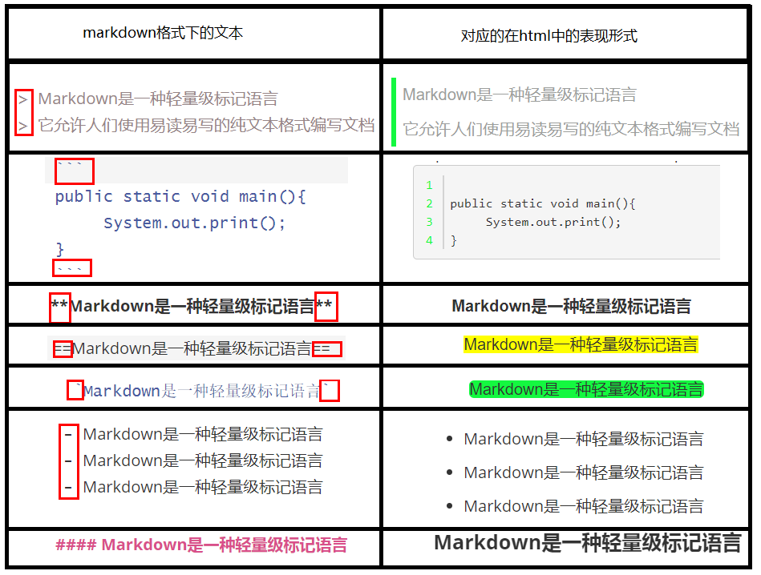

自定义markdown解析器（java实现）
web包下的index.html文件就是利用这个readme.md的这个markdown文件生成的
包中每一个程序的功能：
MarkDownFileRead.java主要功能：从markdown文件中按行读取文件内容，并将内容存储到ArrayList容器中
MarkDownFileScan.java主要功能，此程序主要实现了将markdown文件转换为html文件对应标签的功能
MarkDownParseToHtml.java主要功能，此程序主要实现了整个解析器的逻辑调用，也即main函数就在这个程序里面。
1.什么是markdown
Markdown是一种轻量级标记语言 它允许人们使用易读易写的纯文本格式编写文档，然后转换成有效的XHTML(或者HTML)文档。这样便可以高效的生成可在网页上查看的html文档
而我们实现的markdown解析器的作用即为利用java代码将markdown格式的文件解析为可以直接在浏览器中直接显示的html代码文件
2.还不懂什么是markdown吗？那么我们就来举个例子吧

以上几个markdown和对应html的示意图，即为此个markdown解析器所实现的几个功能，还有其他功能，将在接下里的一部分中说明其意义
3.此解析器支持的markdown标签如下内容
> 对应于html中的引用，即左侧方有个碧绿色边框 ``` 即对应于html中的代码块，即预格式的标签使用 ** 对应于html中<b> * 对应于html中<i> == 对应于html中初始时样式的背景色为黄色，即高亮 ` 对应于html中行内引用，即背景色为碧绿且有圆角边框 - 对应于html中的无序列表ul 1. 2. 对应于html中的有序列表ol # 对应于html中的标题，即<h1><h2><h3>..这几个标签  对应于html中的图片,[]对应alt属性，()对应src属性 ------ 对应于html中的水平分割线，即<hr/> ~~ ~~ 对应于html中的删除线，可以对应于html中的<s></s>标签,是行内元素 []() 对应于html中的超链接，[]中为链接的内容，()内部为链接的地址 注意：markdown中的空行我将解析为<br>
4.解析器实现原理解释
对于以上已经实现的标签，通过它们作用范围的不同，我们可以将这些标签划分为两类。
第一类：作用范围可以跨越多行，也可以是单行的，也即相当于是块级元素，如代码块、引用块、无序列表以及有序列表等等。
第二类：作用范围不可以跨越多行的，也即行内元素，如粗体、斜体、图片、行内引用、高亮、超链接、删除线、水平分割线标题等等
注意：对于以上的两类中，对于代码块、引用块、无序列表、有序列表、标题、水平分割线这6类标签的标志必须出现在行的首部才行， 同时水平分割 线也必须独占一行且在首部才行，而除了这6类标签必须出现在首部外，其他的标签都可以出现在一行的任意位置；同时还需要注意，出现在代码块中的任意markdown格式的语句都是没有效果的，所以为了保证代码块中显示的效果准确，在此个代码中，每次都会去先解析出代码块的位置及其范围，从而避免错误布局的出现。
5.实现思路
由于我们最终想要的结果是每一行markdown格式的代码对应的是html中的什么内容，所以在此个解析器中主要是通过逐行扫描的方法实现对每一行markdown标签的判断。进而再对这个markdown标签的内容解析，生成对应的html文档。
第零步：初始化两个ArrayList，分别用来保存markdown文件每一行的内容及其对应的标签类型
第一步：利用文件流对markdown文件进行逐行的读取，并将文件的内容逐行保存到内存中，通过ArrayList进行保存
第二步：开始对存储在ArrayList中文件的每一行进行第一次判断；扫描解析代码区、空行、分割线
第一次判断只去判断代码块的区域是哪些，在判断过程中我们利用arraylist1来保存每一行的文件内容，而用arraylist2来保存 每一行markdown的标签类型。在第一次判断时确定我们的代码区的开始位置和结束位置，即判断每一行的前3位是否是"```", 然后利用arraylsit2来保存对应每一行的标签类型（就比如说如果找到了第一个代码块的标签标志，就给此个arraylist2中存入 一个code-enter的标志，代表对应的arraylist1中的对应行是代码的进入位置，然后通过这个我们便可以确定代码区的位置 了。由于第一次只是扫描代码区，所以对于其他非代码区的地方我们将其类型都设置为None类型；（第一次扫描已经加载到内 存的文件内容）
同样由于空行、分割线只占据一行元素，所以较好判断，所以在这儿将这两个的判断在判断过程中也进行判断。
第三步：在已经确定了代码区的起始和结束的位置后，对于其他的非代码区，现在开始判断非代码区的markdown标签类型。并用 arraylist2记录，在此次开始判断 引用块、无序列表、有序列表、以及标题这几个可以通过行首直接判断的标签类型了，判断原 理类似于对于代码区的判断，其实就是对于每一行的前几个字符判断（第二次扫描已加载到内存文件内容）
第四步：在2、3步的基础上，其实对于大多数部分已经可以转换为html代码了，但是在此个过程中，我们需要扫描每一行，将每一行中 存在的行内元素都给找出来，并转换为对应的html文件。
6.java代码实现
由以上第5部分的分析，实现对应的markdown文件解析器代码，具体如上源代码所示